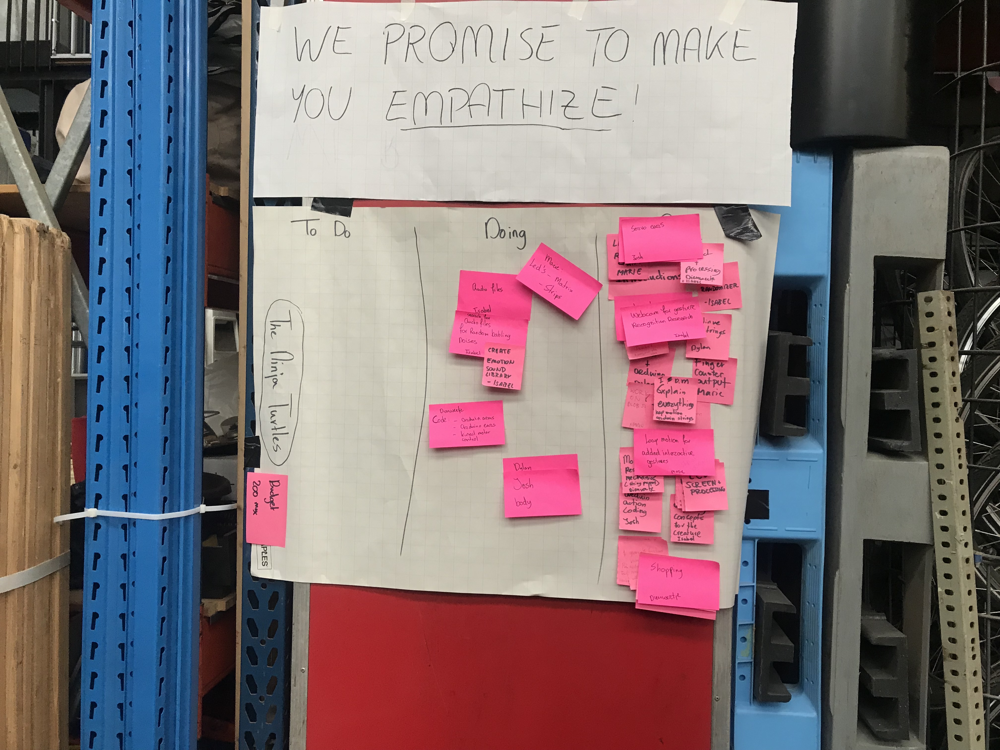

PROCESS
1st day
On the first day we all brainstormed about our topic, artificial creatures. In addition, I talked to a few student assistants and Tim and I had my first idea to make a robot that you could play rock paper scissors with, that would sometime win, sometimes lose and sometimes to something unexpected (like flip you off every once in a while). We talked in the group about this and researched different methods for finger and hand gesture recognition so we looked into computer vision (blobdetection), kinect and leap motion. Mostly we all did research and brainstormed.
2nd day
The second day for me was focused on getting the hang of leap motion and connecting it to processing. There are plenty of libraries available online to use, but not all of them work or connect to processing. We also had a very cool guest lecturer. I created this awesome painting with leap motion and processing. My team members researched connecting processing to arduino and how to make the blob detection connect to arduino too. By the end of this day, we decided to drop the blob detection as it would not make for a very nice user experience for a final product, it was very glitchy and it would have been hard to manipulate the environment at the EXPO to make it a usable source of input.
3rd day
This was one of the most frustrating days as at first got the finger counter working with leap motion, which I wanted to use as a way to recognise which gesture someone is making to play rock paper scissors, but halfway through the day, it just stopped working and I never found out why. I spent hours trying to fix this but, eventually I had to give up. But by this day we had already decided on using an xbox kinect as an input source to interact with our creature. We didn’t really have a clear concept yet, as I had given up on the rock paper scissors thing and the only other idea was to make an R4-D5 from star wars.
4th day
This was one of the most frustrating days as at first got the finger counter working with leap motion, which I wanted to use as a way to recognise which gesture someone is making to play rock paper scissors, but halfway through the day, it just stopped working and I never found out why. I spent hours trying to fix this but, eventually I had to give up. But by this day we had already decided on using an xbox kinect as an input source to interact with our creature. We didn’t really have a clear concept yet, as I had given up on the rock paper scissors thing and the only other idea was to make an R4-D5 from star wars.
5th day
The next day we thought of an LED matrix for a face or mouth, so we ordered one. In addition, we realised we were going to need LED strips so we ordered transistors and strips, but meanwhile Joel suggested I try a lilypad for a way to practice rgb lighting with arduino, took me hours but couldn’t figure it out. We then decided to focus on the sounds the robot was going to make and how to make them responsive with the kinect. We landed on R2-D2 noises along with voices from the Portal games, to make it seem more human. By the end of the day, we got it working! We also brainstormed about what the robot should look like and we went to action and got the proper frame to put as the body, along with some more materials (for the arms and so). We also showed our initial prototype to Chris and Tim who both gave us some interesting insight into what we should do to make it more creature-like.


6th day
The LED matrix was pretty easy to hook up and get the code to work, but after awhile we realised something was wrong. We tried different arduinos, breadboards, a different matrix, none of which worked. After a few hours, it came to light that it was one of the cables and why we didn’t realise was because we had 2 broken ones in 2 different sets. Other than that, we took the leap motion back into consideration and I managed to get it to recognise two gestures (swipe and circle). We thought that if we have time we can make the leap motion control the sounds/music the robot is playing. Since I spent a lot of the day on the LED matrix, I didn’t have time to start on the LED strips, but decided to leave it for the next day.

7th day
This day the boys mainly were busy with the body, and making the frame work together, but me, Isabel and Dieuwertje were working on coding and the LED strips. Since the LED strips we had were just from action, we had to break them apart and solder them together to the right wires. This took a very long time as well because I kept thinking that it was my soldering that was the problem with the strips, but turns out they were just defective anyway. So we went out and got some new strips at action, which ended up being even more difficult to solder, but we couldn’t give up now. The boys were almost finished with the body and thinking about how to present our robot, what to attach it to and how to hide our laptops that were controlling it. We also got the servo motors working for the ears and arms, to make it wave and seem excited and happy.
8th day
The next day we were focused on getting everything to work together, the whole code. We achieved some success and were pretty confident. Me and Dylan were hard at work with soldering so we could use the led strips and even though it took a long time, we got them to be responsive to a certain mood input! The boys also finished the huge black cardboard boxes into which we could put our laptops during the expo to make them look nicer. We attached newly coloured ears onto our robot along with the arms and the kinect and figured out how to attach it to the black boxes.
EXPO day
The day before the EXPO Dieuwertje was up almost the entire night to put together the whole code and it worked… for a bit. I had to leave for an hour and half because I forgot the LED strips home, but I came back as fast I could. When I got back I found the others very stressed because MARVIN had stopped working, but since I didn’t know most of the code, there wasn’t much I could do to help besides to hook up the LEDs. Once I realised that there was no time to make the LEDs part of the big code, I made them fade in and out, like MARVIN was breathing and set them in the body. We also realised that we couldn’t add the leap motion as it became incredibly laggy and buggy when connected to a windows computer and we didn’t have time to troubleshoot. Thanks to Tim, we got MARVIN working a little bit right before the expo, but then maybe 2 hours in, Isabel came and fixed everything and MARVIn worked perfectly. We also achieved our goal, which was to make people empathise. A lot of people didn’t want to make MARVIN sad so they kept interacting with him. I couldn’t be more happy with the result!
PRODUCT
M.A.R.V.I.N
Our robot named Marvin is a cute little fella. It reminded all of us of a dog. When MARVIN is alone, he talks to himself in R2-D2 noises, as to seem like it’s an entity of its own and not just there to interact with humans. He is in a neutral mood when no one is interacting with him. When someone enters into his field of view, he becomes happy, his ears start wiggling and he puts his arm up. When you wave at him, he waves back and plays a happy song. At random times, he also plays the sounds of the turrets from the Portal games, to sound human. When someone exits his field of view, after a period of time, he becomes sad that someone left and plays a random sad song. Then, after awhile again, it becomes neutral. If more than one person enter his field of view, he recognises them both and waves at them separately. If one person leaves his field of view, but at least one person remains, he becomes sad and plays a sad song even if there’s still someone there with him. At the EXPO, we noticed people couldn’t just walk away as they didn’t want to make him sad and ran back into his field of view to make him happy again. As our promise was to make you empathise, I can say that we achieved that goal. Additionally, we put one of his arms in a sling to make him even cuter and make people empathise even more.
Video made by Isabel Fetter about our labweeksREFLECTION
These 9 days were exhausting, exciting and education. I could never have imagined that I would be capable of achieving so much in 2 weeks, like building a f***ing robot! It was awesome. Looking back, I could probably have done more coding-wise, but not everyone can do everything on a team, it would be impossible. Even during the weeks leading up to the lab weeks, with workshops and the assignments, everything still seemed very impossible and I had no earthly idea that we would build such a cool thing in such a short time. I had very little knowledge of Arduino, even though I had completed the assignments. At first, I was also really scared because I realised that artificial creatures might have very well been the hardest topic to choose, concept wise. But towards the end, when we already had a bodyframe, I became pretty confident in our abilities. There was a very clear arc in productivity and motivation during these nine days. The lowest point being when we had a big fight as a team, but we came out of that gracefully and went back to work right away. I am incredibly happy for the experience and so proud of what we did!